| Candidate Name | Dharmik Rakeshbhai Prajapati |
| Candidate Code | [ CANDIDATE CODE – TO BE FILLED ] |
| Programme | Indian Army Internship Programme (IAIP) 2026 |
| Internship Domain | Process Automation and Application Development Intern |
| Technology Stack | React.js 19 (Vite 8) · Java 17 with Spring Boot 3.5 · MySQL |
| GitHub Repository | https://github.com/dharmikk7610/IAIP_Intern_Assignment |
| Document Version | 1.0 – 31 October 2026 |
The following assumptions were made where the assignment left a detail open. Each one is implemented in the code listed in the right-hand column.
| # | Assumption | Where it is implemented |
|---|---|---|
| 1 | Employee Code is generated automatically from the department: a one-letter department prefix
(IT → I, HR → H, Finance → F, Sales → S, Admin → A)
followed by a 4-digit, department-wise counter, e.g. I0001. It cannot be entered by the user. |
EmployeeCodeGenerator, EmployeeCodeSequence.allocateNextCode() |
| 2 | Codes are never reused. After a transfer the old code is retired and the employee receives the next free code of the new department. | employee_code_sequences.next_value only increases |
| 3 | The internal Employee ID never changes; a transfer changes only the department and the Employee Code. | EmployeeTransferService.transfer |
| 4 | The department can be changed only through a Department Transfer, not through Edit, so that the code and the transfer history always match. | EmployeeService.update (returns 400) |
| 5 | Every transfer is kept as history (old/new department, old/new code, date, reason, user). History rows are only inserted, never updated. | employee_transfer_history |
| 6 | Exactly three roles: Admin, Manager and Employee (as required by the assignment). The
roles table holds the role of each employee record; permissions come only from the login account’s role
(ADMIN / MANAGER / EMPLOYEE, stored in users.user_role), so an employee record’s role grants no access by itself. |
roles table, UserRole enum |
| 7 | Role-based authorization decides access: Admin has full access, Manager manages employees but cannot deactivate/reactivate and sees masked Aadhaar/PAN, Employee sees only their own record. | @PreAuthorize rules, EmployeeAccess |
| 8 | Delete means deactivate (soft delete). The status becomes INACTIVE; the record and its history are kept. Only an Admin can deactivate or reactivate. | PATCH /api/employees/{id}/deactivate |
| 9 | Aadhaar and PAN are sensitive personal information: stored encrypted in a separate table, masked for Managers, never part of global search, and unique across employees. On edit they may be left blank to keep the stored values. | EmployeePersonalDetails, AesGcmEncryptor, SensitiveDataHasher |
| 10 | Minimum age 18: date of birth not in the future, employee at least 18 years old, joining date on or after the 18th birthday. DESIGN CHOICE | EmployeeService.validateDates, validation.js |
| 11 | Salary ranges: minimum inclusive, maximum exclusive, so presets never overlap (₹3–5 LPA = ₹3,00,000 ≤ salary < ₹5,00,000). The same rule applies to the custom range, whose UI label reads “Max, below (₹)”. DESIGN CHOICE | EmployeeSpecifications, salaryRanges.js |
| 12 | Transfer rules: not to the same department, not for INACTIVE employees (ON_LEAVE is allowed), transfer date not in the future, not before joining and not before the previous transfer. DESIGN CHOICE | EmployeeTransferService |
| 13 | An INACTIVE employee cannot log in; the same 401 response as a wrong password is returned. | AuthService.login |
| 14 | Status search matches word starts: searching “active” finds Active but not Inactive; “leave” finds On Leave. | EmployeeSpecifications.statusesMatching |
| 15 | Sample data is created by the backend on first start-up (20 employees, 4 transfers, 3 demo logins), because Aadhaar/PAN must be encrypted with the installation’s own key and passwords must be BCrypt-hashed. All sample names, contact details and identity numbers are fictitious. | SampleDataSeeder |
The Employee Management System is a web application for registering employees, maintaining their personal and employment details, moving them between departments and finding them quickly. A React single-page application talks to a Spring Boot REST API, which stores data in MySQL.
It was developed as the technical assignment for the IAIP 2026 Process Automation and Application Development internship. Its objectives follow the assignment:
| Problem | How the application solves it |
|---|---|
| Duplicate or manually typed employee codes | Codes are generated by the server under a database row lock; a UNIQUE constraint is a final safety net. |
| Lost information when an employee changes department | Transfers run in one transaction and write a history row with old and new department and code. |
| Invalid or duplicate data | Same validation rules in the browser and on the server; duplicate email, Aadhaar and PAN are rejected. |
| Exposure of identity documents | Aadhaar/PAN are encrypted at rest, masked for Managers and excluded from search. |
| Slow manual lookup | Global search plus six filters, sorting and pagination executed as a single SQL query. |
| Action | ADMIN | MANAGER | EMPLOYEE |
|---|---|---|---|
| Search / list employees | ✓ | ✓ | ✗ |
| View employee details and transfer history | ✓ | ✓ | own record only |
| View full Aadhaar / PAN | ✓ | masked | own record only |
| Create / edit employees | ✓ | ✓ | ✗ |
| Transfer employees | ✓ | ✓ | ✗ |
| Deactivate or reactivate employees | ✓ | ✗ | ✗ |
These rules are enforced by the backend (@PreAuthorize); the frontend only hides actions a role cannot use.
| Module | Responsibility | Main source files |
|---|---|---|
| Authentication | Login, JWT issue/verification, role-based route guards | AuthController, AuthService, JwtService, AuthProvider.jsx |
| Employee management | Register, view, edit, deactivate; personal details | EmployeeController, EmployeeService, EmployeeFormPage.jsx |
| Department transfer | Transfer with new code and history | EmployeeTransferController, EmployeeTransferService, TransferPage.jsx |
| Search and listing | Global search, filters, sorting, pagination | EmployeeSpecifications, EmployeeListPage.jsx |
| Lookups | Departments and roles for dropdowns | LookupController, useLookups.js |
| Sensitive-data protection | Encryption, keyed hashing, masking | security/crypto/*, SensitiveDataMasker |
| Error handling | One JSON error format with correct HTTP status | GlobalExceptionHandler, ErrorResponse |
| Sample data | Inserts demo employees, transfers and logins on first start | SampleDataSeeder |
Versions are taken from backend/pom.xml, the libraries packaged in the built backend JAR,
frontend/package-lock.json and the development machine.
| Layer | Technology | Actual version | Purpose |
|---|---|---|---|
| Frontend | React / React DOM | 19.3.1 | User interface |
| Frontend | React Router DOM | 7.18.5 | Client-side routing and route guards |
| Frontend | Axios | 1.21.0 | HTTP client for the REST API |
| Build tool | Vite (+ @vitejs/plugin-react 6.1.2) | 8.3.5 | Development server (with /api proxy) and production build |
| Code quality | oxlint | 1.90.0 | JavaScript / React linting |
| Language | Java | 17 (JDK 17.0.10 used) | Backend development |
| Backend | Spring Boot (Spring Framework 6.2.19) | 3.5.16 | REST APIs, dependency injection, configuration |
| Web server | Embedded Apache Tomcat | 10.1.55 | HTTP server inside the Spring Boot application |
| ORM | Spring Data JPA / Hibernate ORM | 3.5.13 / 6.6.53.Final | Entities, repositories, dynamic search queries |
| Validation | Jakarta Bean Validation (spring-boot-starter-validation) | 3.5.16 | Request field validation |
| Security | Spring Security | 6.5.11 | Filter chain, role-based authorization, BCrypt |
| Authentication | JJWT (jjwt-api / impl / jackson) | 0.12.6 | JWT creation and verification (HS256) |
| Database | MySQL Server | 9.0.1 (supports MySQL 8+) | Data persistence |
| JDBC driver | MySQL Connector/J | 9.7.0 | Database connectivity |
| API docs | springdoc-openapi (Swagger UI, OpenAPI 3.1) | 2.8.17 | Interactive API documentation |
| Testing | JUnit Jupiter, Spring Boot Test, MockMvc | 5.12.2 / 3.5.16 | Automated integration and unit tests |
| Build | Maven Wrapper (downloads Maven) | 3.9.11 | Backend dependency management and build |
| Runtime | Node.js / npm | 24.11.0 / 10.9.1 (Node 20+ required) | Frontend tooling |
| API testing | Postman collection (19 requests) | – | Ready-made API requests (docs/) |
The system is a three-tier application: a React single-page application in the browser, a stateless Spring Boot REST API, and a MySQL database. All communication between the tiers is JSON over HTTP; the browser never accesses the database directly.
Figure 4.1 – Application architecture and request flow.
React page → Axios API layer → Spring Boot Controller → Service → Repository → MySQL, and the response travels back the
same way as JSON. For example, saving the registration form calls createEmployee() in
src/api/employees.js, which sends POST /api/employees; EmployeeController.create validates
the body and calls EmployeeService.create, which uses the repositories inside one database transaction.
POST /api/auth/login.AuthService loads the user, compares the password with the stored BCrypt hash and checks that the account is
enabled and that a linked employee is not INACTIVE.JwtService issues an HS256-signed token containing the username, user id, login role and linked employee id,
valid for 60 minutes.Authorization: Bearer <token> with every request.JwtAuthenticationFilter verifies the signature and expiry and places the user and role
(ROLE_ADMIN, ROLE_MANAGER or ROLE_EMPLOYEE) into the security context.
@PreAuthorize then allows or rejects the call.Any exception thrown by a controller or service is converted by GlobalExceptionHandler into an
ErrorResponse JSON body with the correct HTTP status (Section 12). Authentication and permission failures raised by the
security filter chain use the same format. The frontend shows fieldErrors next to the matching form fields and the
message in a notification.
The schema is defined in database/01_schema.sql (MySQL 8+, InnoDB) and reference data in
database/02_seed_data.sql. The database contains seven tables. The JPA entities in
com.ems.entity map the same tables, column names and constraint names.
Figure 5.1 – Entity-relationship diagram of the EMPLOYEEMNG database (PK = primary key, FK = foreign key, UQ = unique constraint).
| Table | Purpose | Entity |
|---|---|---|
employees | General and employment information; the only table used by global search. | Employee |
employee_personal_details | Aadhaar and PAN (encrypted + keyed hash) and date of birth; 1:1 with employees, sharing its primary key. | EmployeePersonalDetails |
departments | IT, HR, Finance, Sales, Admin with their one-letter code prefix. | Department |
roles | The 3 roles: Admin, Manager, Employee. | Role |
employee_code_sequences | One counter row per department (next_value). | EmployeeCodeSequence |
employee_transfer_history | One row per transfer; insert-only. | EmployeeTransferHistory |
users | Application logins with BCrypt password hash and login role; EMPLOYEE logins link to their employee. | User |
| Relationship / constraint | Details |
|---|---|
| departments 1 – N employees | fk_employees_department: employees.department_id → departments.id |
| roles 1 – N employees | fk_employees_role: employees.role_id → roles.id |
| employees 1 – 1 employee_personal_details | fk_personal_employee; employee_id is both primary and foreign key |
| departments 1 – 1 employee_code_sequences | fk_code_seq_department; department_id is both primary and foreign key |
| employees 1 – N employee_transfer_history | fk_transfer_employee; plus fk_transfer_old_department and fk_transfer_new_department → departments |
| users N – 1 employees (optional) | fk_users_employee, nullable and unique (uk_users_employee): an employee has at most one login |
| users 1 – N transfer history | fk_transfer_user: who performed the transfer (NULL for sample data) |
| Unique constraints | uk_employees_code, uk_employees_email, uk_personal_aadhaar_hash, uk_personal_pan_hash,
uk_departments_name, uk_departments_code_prefix, uk_roles_name, uk_users_username |
| Check constraint | chk_employees_salary: annual_salary > 0 |
| Indexes | employees: department_id, role_id, status, joining_date, annual_salary, full_name (plus the unique indexes on employee_code and email); transfer history: employee_id. |
The utf8mb4_0900_ai_ci collation is case-insensitive, so the unique email constraint and LIKE searches ignore letter case. The application also stores emails in lower case.
02_seed_data.sql inserts one row per department into employee_code_sequences with
next_value = 1. To allocate a code, EmployeeCodeGenerator.nextCodeFor reads that row with
SELECT … FOR UPDATE (a pessimistic write lock), builds prefix + 4-digit value (e.g. H0006) and
increments the counter. The lock is held until the surrounding transaction commits, so concurrent requests for the same
department wait for each other and can never receive the same code. If the transaction fails, the counter increment is rolled
back as well.
Aadhaar and PAN are not stored in plain text. The columns aadhaar_encrypted and pan_encrypted hold
AES-256-GCM ciphertext written by a JPA converter, and aadhaar_hash / pan_hash hold a keyed HMAC-SHA256
value whose UNIQUE index prevents duplicates without storing the number itself. Because these columns are in a separate table,
the search query (which reads only employees) cannot match them.
Each transfer stores the old and new department, the old and new Employee Code, the transfer date, the reason and the user who performed it. The employee update and the history insert happen in one transaction, so the database never contains a changed code without its history row, or the other way round. The SQL scripts insert only reference data; the 20 sample employees and 4 sample transfers are inserted by the backend on first start (Assumption 15).
All screenshots below were captured on 31 October 2026 from the application running locally with its sample data (5 departments, 3 roles, 20 employees; Chrome, 1366 px wide). The application has no separate dashboard page: after login, Admin and Manager land on the Employee List and an Employee lands on their own profile.
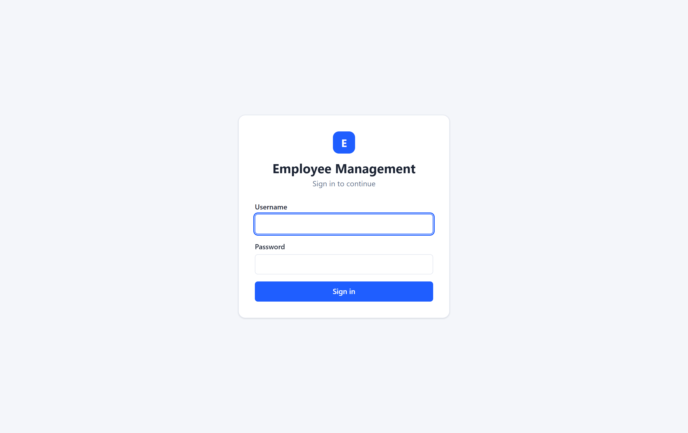
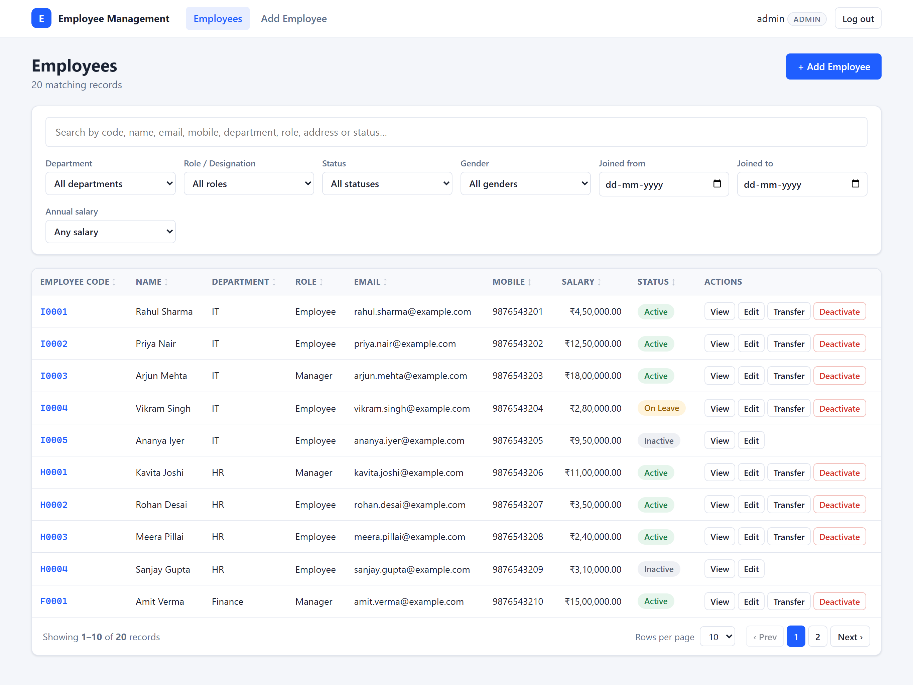
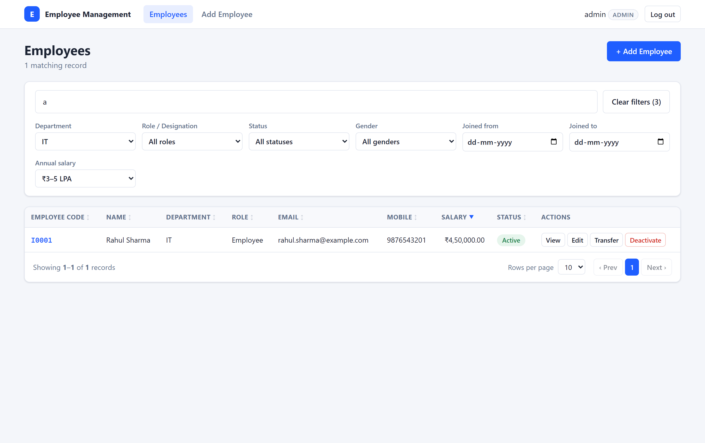
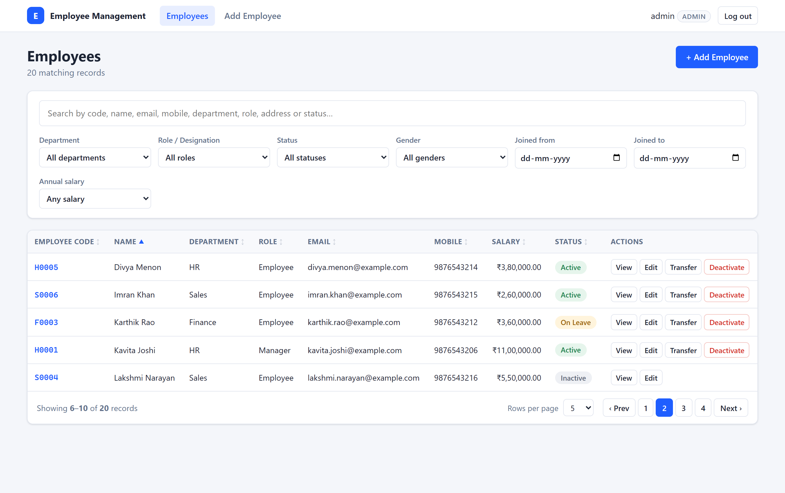
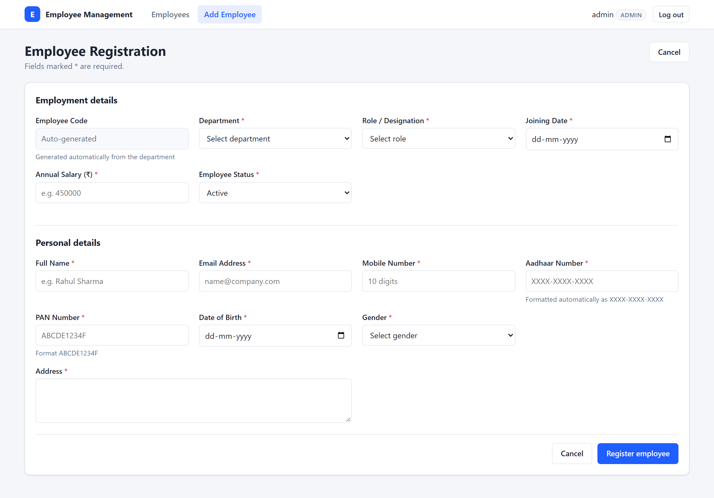
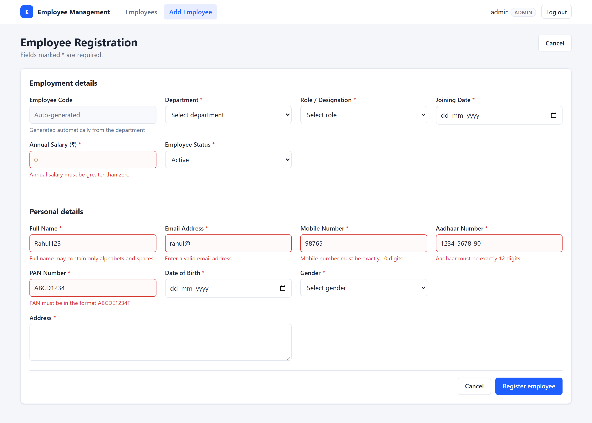
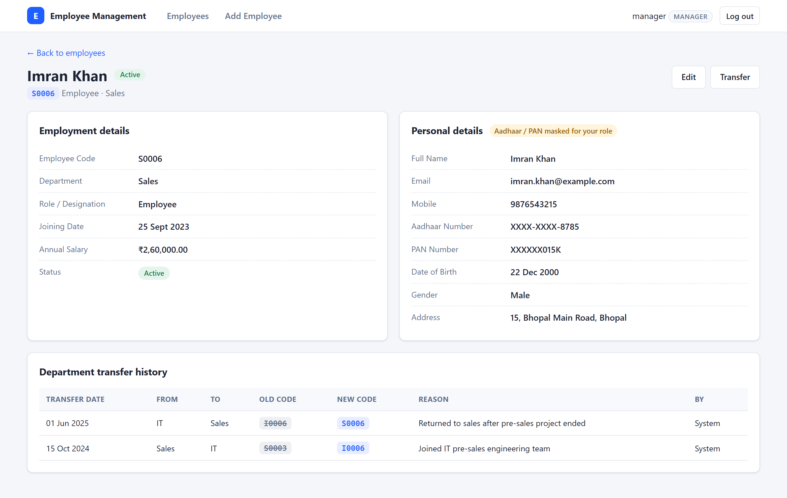
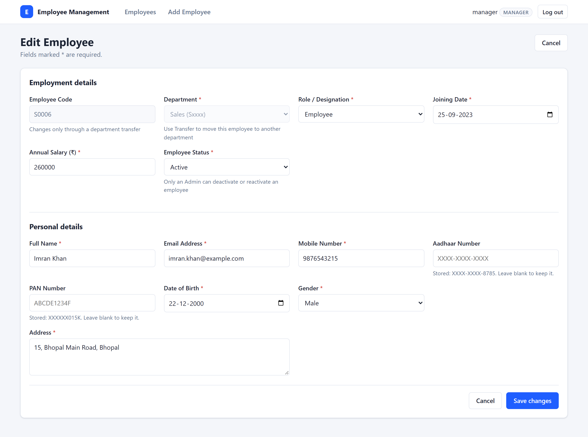
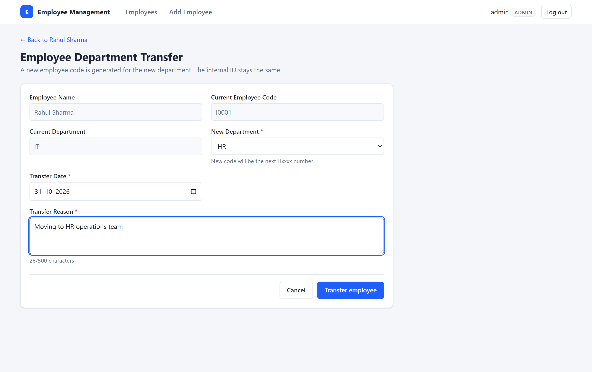
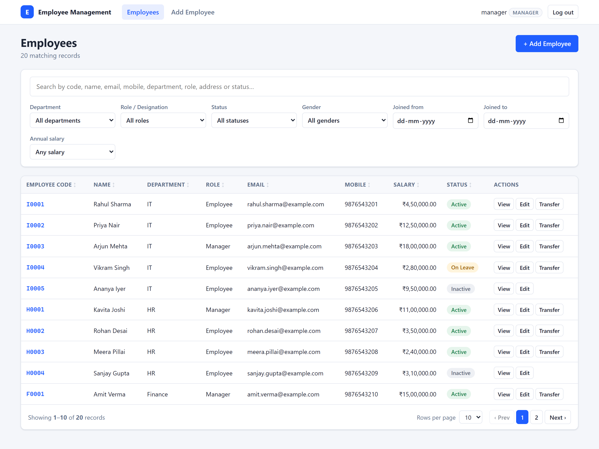
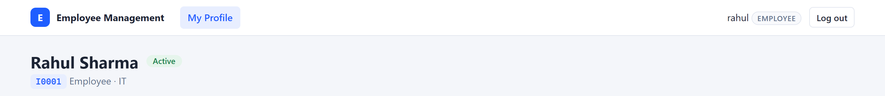
Base URL: http://localhost:9998/api. All endpoints except login and the API documentation require the header
Authorization: Bearer <token>. The specification is available in Swagger UI
(http://localhost:9998/swagger-ui.html), in docs/openapi.json and in the Postman collection
docs/EmployeeManagement.postman_collection.json.
| Method | Endpoint | Description | Access role |
|---|---|---|---|
| Authentication | |||
| POST | /api/auth/login | Log in; returns JWT, expiry and user info | Public |
| GET | /api/auth/me | Current user from the token | Any logged-in user |
| Employees | |||
| GET | /api/employees | Search, filter, sort and paginate (Section 9) | ADMIN, MANAGER |
| POST | /api/employees | Create employee; code generated; 201 + Location header | ADMIN, MANAGER |
| GET | /api/employees/{id} | Employment details of one employee | ADMIN, MANAGER, own EMPLOYEE |
| GET | /api/employees/{id}/personal-details | Aadhaar, PAN (full or masked) and date of birth | ADMIN, MANAGER (masked), own EMPLOYEE |
| PUT | /api/employees/{id} | Update employee (not department); status into or out of INACTIVE is ADMIN-only | ADMIN, MANAGER |
| PATCH | /api/employees/{id}/deactivate | Soft delete: status → INACTIVE | ADMIN |
| Department transfers | |||
| POST | /api/employees/{id}/transfer | Transfer to another department; new code; history row | ADMIN, MANAGER |
| GET | /api/employees/{id}/transfers | Transfer history, newest first | ADMIN, MANAGER, own EMPLOYEE |
| Lookups | |||
| GET | /api/departments | Departments with code prefix | Any logged-in user |
| GET | /api/roles | Roles: Admin, Manager, Employee | Any logged-in user |
Examples use the fictitious sample data; tokens are shortened and identity numbers are dummy values.
POST /api/auth/login
{ "username": "admin", "password": "••••••••" }
200 OK
{ "token": "eyJhbGciOiJIUzI1NiJ9.…", "tokenType": "Bearer", "expiresAt": "2026-10-31T12:00:00Z",
"user": { "userId": 1, "username": "admin", "role": "ADMIN", "employeeId": null } }POST /api/employees
{ "fullName": "Asha Verma", "email": "asha.verma@example.com", "mobile": "9876500000",
"aadhaarNumber": "1234-5678-9012", "panNumber": "ABCDE1234F", "dateOfBirth": "1998-05-14",
"gender": "FEMALE", "address": "12 MG Road, Pune", "departmentId": 3, "roleId": 3,
"joiningDate": "2025-07-01", "annualSalary": 420000, "status": "ACTIVE" }
201 Created Location: http://localhost:9998/api/employees/21
{ "id": 21, "employeeCode": "F0005", "fullName": "Asha Verma", "email": "asha.verma@example.com",
"mobile": "9876500000", "gender": "FEMALE", "address": "12 MG Road, Pune", "departmentId": 3,
"departmentName": "Finance", "roleId": 3, "roleName": "Employee", "joiningDate": "2025-07-01",
"annualSalary": 420000, "status": "ACTIVE", "version": 0, "createdAt": "…", "updatedAt": "…" }The id and code are illustrative: the code is the next free Finance number at the time of the request.
The response never contains Aadhaar or PAN. They are returned only by the personal-details endpoint:
GET /api/employees/15/personal-details (as MANAGER)
{ "employeeId": 15, "employeeCode": "S0006", "fullName": "Imran Khan",
"aadhaarNumber": "XXXX-XXXX-8785", "panNumber": "XXXXXX015K", "dateOfBirth": "2000-12-22", "masked": true }POST /api/employees/1/transfer
{ "newDepartmentId": 2, "transferDate": "2026-10-31", "reason": "Moving to HR operations team" }
200 OK
{ "employee": { "id": 1, "employeeCode": "H0006", "departmentName": "HR", … },
"transfer": { "id": 5, "employeeId": 1, "employeeName": "Rahul Sharma",
"oldDepartmentName": "IT", "newDepartmentName": "HR",
"oldEmployeeCode": "I0001", "newEmployeeCode": "H0006",
"transferDate": "2026-10-31", "reason": "Moving to HR operations team",
"transferredBy": "admin", "createdAt": "…" } }Rahul Sharma (id 1) keeps id 1; his code changes from I0001 to the next free HR code (H0006 with the
current sample data, whose highest HR code is H0005).
400 Bad Request
{ "timestamp": "…", "status": 400, "error": "Bad Request", "message": "Validation failed",
"path": "/api/employees", "fieldErrors": { "panNumber": "PAN must be in the format ABCDE1234F" } }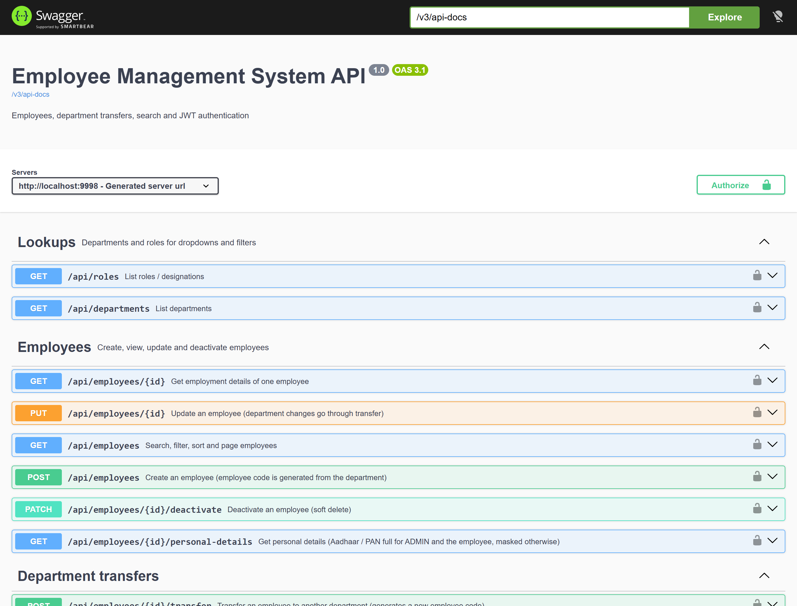
/employees/new, EmployeeFormPage).validateEmployee() checks every field; errors are shown next to the fields and nothing is sent.POST /api/employees with the JWT. @PreAuthorize allows only ADMIN and MANAGER.@Validated({Default, OnCreate}): Aadhaar and PAN required on create).
EmployeeService.create then checks the 18+ age rule and the joining date, and that the department and role exist.EmployeeCodeGenerator locks the department’s sequence row and allocates the next code.PUT /api/employees/{id} (ADMIN, MANAGER). The form sends the version it loaded; if someone else saved
the employee in the meantime, the API returns 409 instead of overwriting (optimistic locking with @Version).PATCH /api/employees/{id}/deactivate is ADMIN only; a Manager receives 403.Everything is executed on the server by GET /api/employees. All parameters are optional and every supplied
parameter narrows the result (they are combined with AND).
| Parameter | Behaviour |
|---|---|
search | Case-insensitive “contains” match on Employee Code, Name, Email, Mobile, Address, Department name and Role name, plus Status by word start. Aadhaar and PAN are never searched. |
departmentId, roleId | Exact match |
status | ACTIVE, INACTIVE, ON_LEAVE |
gender | MALE, FEMALE, OTHER |
joinedFrom, joinedTo | Joining date range, yyyy-MM-dd, both ends inclusive |
minSalary, maxSalary | Annual salary; minimum inclusive, maximum exclusive |
sortBy, sortDir | id, employeeCode, fullName, email, mobile, departmentName, roleName, joiningDate, annualSalary, status;
asc or desc |
pageNumber, pageSize | 1-based page number; 1–100 records per page (the UI offers 5, 10 and 20) |
| Option | ₹1–3 LPA | ₹3–5 LPA | ₹5–10 LPA | ₹10+ LPA | Custom range |
|---|---|---|---|---|---|
| minSalary | 100000 | 300000 | 500000 | 1000000 | entered minimum |
| maxSalary | 300000 | 500000 | 1000000 | – (none) | entered maximum (“below”) |
EmployeeSpecifications.matching builds the SQL WHERE clause with the JPA Criteria API: each supplied parameter adds one
condition and all conditions are joined with AND, so any combination of search, filters, sorting and paging runs as
one SELECT for the page plus one COUNT for the total. Values are bound as JDBC parameters, % and
_ in the search text are escaped, and only allow-listed sort fields are accepted. The employee id is added as a second
sort key so that page boundaries are stable. An entity graph loads department and role in the same query.
On the frontend (EmployeeListPage), the search box is debounced (400 ms), every filter or sort change returns to page 1,
and all criteria are kept in the URL query string. If the current page no longer exists (for example after the last record on it was
deactivated), the list moves to the last existing page. Invalid criteria (e.g. custom minimum greater than maximum) show the server’s
field message and clear the old results.
GET /api/employees?search=Rahul&departmentId=1&minSalary=300000&maxSalary=500000&pageNumber=1&pageSize=10
200 OK
{ "content": [ { "id": 1, "employeeCode": "I0001", "fullName": "Rahul Sharma", "departmentName": "IT",
"roleName": "Employee", "annualSalary": 450000.0, "status": "ACTIVE", … } ],
"pageNumber": 1, "pageSize": 10, "totalElements": 1, "totalPages": 1 }Figure 10.1 – Department transfer workflow.
Because the list, the details page and the personal-details response all read the code from
employees.employee_code, the new Employee Code appears everywhere immediately after the transfer.
| Mechanism | Implementation |
|---|---|
| JWT authentication | HS256-signed tokens (JJWT 0.12.6) with claims sub (username), uid, role and
eid (linked employee); validity 60 minutes (app.security.jwt-expiration-minutes). The signing key comes from
JWT_SECRET and must be at least 32 bytes, otherwise the application refuses to start. |
| Token validation | JwtAuthenticationFilter reads the Bearer header and verifies signature and expiry on every request.
An invalid, tampered or expired token leaves the request unauthenticated, giving 401. |
| Spring Security configuration | SecurityConfig: stateless sessions, HTTP Basic and form login disabled; public endpoints are only
POST /api/auth/login, Swagger UI / OpenAPI docs and /error; all others require authentication. CSRF protection is
disabled because no cookies or sessions are used (the token travels in a header). 401 and 403 are returned as JSON. |
| Role-based authorization | @EnableMethodSecurity with @PreAuthorize on each endpoint (Section 7). Record-level rule:
@employeeAccess.isSelf(authentication, #id) lets an EMPLOYEE read only the record whose id is in their token. |
| Password hashing | BCrypt (BCryptPasswordEncoder); plain passwords are never stored. Login returns the same message and takes
comparable time for an unknown user, wrong password, disabled account or inactive employee, so valid usernames cannot be discovered. |
| Aadhaar / PAN encryption | AES-256-GCM (AesGcmEncryptor) with a random 12-byte IV per value and a 128-bit authentication tag,
stored as Base64(IV ‖ ciphertext). Applied automatically by the JPA EncryptedStringConverter. Key: ENCRYPTION_KEY (32 bytes). |
| HMAC uniqueness check | SensitiveDataHasher stores HMAC-SHA256 with a secret key (HASH_KEY) in a UNIQUE column, so duplicates are
rejected without storing the number, and the 12-digit Aadhaar space cannot be brute-forced without the key. |
| Masking | Full Aadhaar (formatted XXXX-XXXX-XXXX) and PAN only for ADMIN or the employee themself; otherwise
XXXX-XXXX-9012 / XXXXXX234F with "masked": true. List and employee responses never include them. |
| Search protection | The search query reads only the employees table; employee_personal_details is never joined (verified by an automated test). |
| SQL injection | Criteria API / Spring Data with bound parameters; no SQL strings built from user input; sort fields allow-listed. |
| CORS | Only origins from app.cors.allowed-origins (default http://localhost:5173, override with
CORS_ALLOWED_ORIGINS); methods GET, POST, PUT, PATCH, DELETE, OPTIONS; headers Authorization and Content-Type; applies to /api/**. |
| Secrets management | Database password and the three keys are read from environment variables or the git-ignored
application-local.properties; none are in the repository or this document. |
| Error messages | Database error texts are never returned to the client, as they can contain data values. |
The same rules are applied in the browser (src/utils/validation.js) for immediate feedback and on the server
(EmployeeRequest annotations and EmployeeService) as the authoritative check.
| Field | Rule (frontend and backend) | Error message |
|---|---|---|
| Full name | Required; alphabets and spaces only (^[A-Za-z ]+$); max 100 | Full name may contain only alphabets and spaces |
| Required; valid format; max 150; unique (case-insensitive) | Enter a valid email address / An employee with this email already exists | |
| Mobile | Required; exactly 10 digits (^\d{10}$) | Mobile number must be exactly 10 digits |
| Aadhaar | Required on create; exactly 12 digits; accepted with or without dashes and auto-formatted as XXXX-XXXX-XXXX; unique | Aadhaar must be exactly 12 digits |
| PAN | Required on create; format ABCDE1234F (auto upper-case); unique | PAN must be in the format ABCDE1234F |
| Date of birth | Required; not in the future; employee at least 18 years old | Date of birth cannot be a future date / Employee must be at least 18 years old |
| Joining date | Required; on or after the 18th birthday | Joining date must be on or after the employee’s 18th birthday |
| Annual salary | Required; greater than zero; at most 2 decimals (10 integer digits) | Annual salary must be greater than zero |
| Gender, address, department, role, status | Required; address max 500; department and role must exist | … is required / Department does not exist |
| Transfer | New department required and different; date not in the future and not before joining; reason required, max 500 | Employee is already in the … department |
| Status | When it is returned |
|---|---|
| 200 / 201 | Success; 201 Created with a Location header for a new employee |
| 400 | Validation error, invalid parameter or enum value, malformed JSON, department change via edit, same-department transfer, invalid transfer date |
| 401 | Missing, invalid or expired token; wrong login |
| 403 | Role not allowed; an employee accessing another employee’s record; a non-Admin deactivating or reactivating |
| 404 | Employee or endpoint not found |
| 405 / 415 | Wrong HTTP method / body not sent as JSON |
| 409 | Duplicate email, Aadhaar or PAN; stale update (edited by someone else); transferring an inactive employee |
| 500 | Unexpected error; a generic message is returned and the details are logged |
GlobalExceptionHandler (@RestControllerAdvice) maps each exception type to a status and the common
ErrorResponse body: Bean Validation errors (one message per field), BusinessValidationException (400),
ResourceNotFoundException (404), ConflictException and optimistic-locking failures (409),
InvalidCredentialsException (401) and AccessDeniedException (403). If two requests insert the same email at the
same moment, the database unique constraint fires; the handler recognises the constraint name and still returns 409 with the
correct field.
The backend has 45 automated tests (JUnit 5 + Spring Boot Test + MockMvc). The integration tests run the complete application
against a real MySQL test database (EMPLOYEEMNG_TEST, created automatically and reset before each test), so they also
exercise SQL constraints, locks and transactions.
| Testing metric | Actual result |
|---|---|
| Total tests | 45 |
| Passed | 45 |
| Failed | 0 |
| Errors | 0 |
| Skipped | 0 |
| Build result | BUILD SUCCESS |
| Database | EMPLOYEEMNG_TEST (MySQL 9.0.1), separate from the development database |
| Last run | 31 October 2026, mvnw.cmd test (Surefire reports in backend/target/surefire-reports) |
| Test class | Tests | What is verified |
|---|---|---|
EmployeeApiIntegrationTestCRUD · validation · concurrency | 12 | Department code generation and encrypted Aadhaar storage; masking for Manager; duplicate email (ignoring case) and duplicate Aadhaar (differently formatted); 400 with one message per invalid field; minimum age; update without department change; stale version → 409; soft-delete deactivate; 404; paging totals; 8 concurrent creates receive unique codes. |
EmployeeSearchIntegrationTestsearch · filters · sort · paging | 10 | Partial, case-insensitive search; search across code, email, mobile, address, department and role; status by word start;
Aadhaar/PAN never matched; %/_ treated literally; salary range boundaries; each filter; search + filters +
sorting + pagination together; sorting by joined fields both directions; invalid parameters → 400. |
EmployeeTransferIntegrationTesttransfer · transactions | 9 | New code with unchanged id; codes never reused and history ordered; same department rejected; inactive employee rejected; invalid dates and missing reason; failed transfer rolls back everything; concurrent transfers into one department get unique codes; only Admin/Manager may transfer; unknown employee → 404. |
SecurityIntegrationTestsecurity | 8 | 401 without or with a tampered token; login success and failure; employee sees only own record; Manager masking and no deactivation (neither PATCH nor a status change via PUT); Admin full access; inactive employee cannot log in; Swagger docs public. |
AesGcmEncryptorTestunit | 4 | Encrypt/decrypt round trip; different ciphertext each time; tampering detected; wrong key length rejected. |
SensitiveDataHasherTestunit | 2 | Same input gives the same hash; different input gives a different hash. |
| Check | Type | Result |
|---|---|---|
| Backend tests (45) | Automated | All passed (above) |
Frontend lint (oxlint) | Automated | 0 errors, 1 warning (unused constant DEMO_USERS in LoginPage.jsx; no effect on behaviour) |
Frontend production build (npm run build) | Automated | Build succeeded (106 modules) |
| Screens in Section 6 | Manual | Captured from the running application on 31 October 2026: login for all three roles, list, combined filters, pagination, form validation, details, edit and transfer forms, masking, Swagger UI. Every screen that shows employee data was captured with the final sample data (5 departments, 3 roles, 20 employees). |
| Sample data on a fresh database | Manual | 5 departments, 3 roles, 20 employees (20 personal-detail rows), 4 transfers, 3 logins;
no orphaned or duplicate rows; running 02_seed_data.sql twice adds nothing |
| Live API calls (login, combined search, masked personal details, Manager deactivation) | Manual | Responses in Sections 7.1 and 9.3 match the running application; a Manager’s deactivation request returns 403 |
| Software | Required | Verified with |
|---|---|---|
| Java (JDK) | 17 or newer | 17.0.10 |
| Maven | Not required – Maven Wrapper included | Wrapper downloads Maven 3.9.11 |
| Node.js | 20 or newer | 24.11.0 |
| npm | Bundled with Node.js | 10.9.1 |
| MySQL Server | 8 or newer, on localhost:3306 | 9.0.1 |
mysql -u root -p < database/01_schema.sql # creates database EMPLOYEEMNG and all 7 tables
mysql -u root -p EMPLOYEEMNG < database/02_seed_data.sql # 5 departments, 3 roles, code sequencesBoth scripts can safely be run again. The connection URL defaults to jdbc:mysql://localhost:3306/EMPLOYEEMNG
(override with DB_URL).
backend/src/main/resources/application-local.properties.example to
application-local.properties in the same folder (this file is git-ignored) and fill in:
DB_USERNAME=root
DB_PASSWORD=<your MySQL password>
ENCRYPTION_KEY=<Base64, 32 bytes>
HASH_KEY=<Base64, 32 bytes>
JWT_SECRET=<Base64, 32 bytes or more>node -e "console.log(require('crypto').randomBytes(32).toString('base64'))".
The same names can be set as environment variables instead (plus optional DB_URL and CORS_ALLOWED_ORIGINS).cd backend
mvnw.cmd spring-boot:run # Windows
./mvnw spring-boot:run # macOS / Linuxhttp://localhost:9998/api · Swagger UI: http://localhost:9998/swagger-ui.htmlmvnw.cmd test (uses the same credentials and creates EMPLOYEEMNG_TEST).cd frontend
npm ci # installs the exact versions from package-lock.json
npm run dev # development serverOpen http://localhost:5173. The Vite development server forwards /api to http://localhost:9998, so no
API URL needs to be configured; VITE_API_BASE_URL can override it for other setups. Production build:
npm run build (output in frontend/dist).
| Username | Password | Login role | Linked employee |
|---|---|---|---|
admin | Admin@123 | ADMIN | – |
manager | Manager@123 | MANAGER | – |
rahul | Employee@123 | EMPLOYEE | Rahul Sharma (I0001) |
These are the publicly documented demo credentials created by the sample-data loader for local evaluation; they are not production credentials.
| Repository URL | https://github.com/dharmikk7610/IAIP_Intern_Assignment |
| Branch | main |
| Contents | Complete frontend and backend source code, database scripts, automated tests, API documentation (OpenAPI and Postman) and README with setup instructions |
| Not included (by design) | node_modules, build output (dist, target) and
application-local.properties with local passwords and keys (all git-ignored) |
IAIP_Intern_Assignment/
├── backend/ Spring Boot REST API (pom.xml, Maven Wrapper)
│ └── src/main/java/com/ems/
│ ├── controller/ REST endpoints + @PreAuthorize rules
│ ├── service/ Business logic, transactions, code generation, transfers
│ ├── repository/ Spring Data JPA repositories + search Specifications
│ ├── entity/ JPA entities and enums
│ ├── dto/ Request / response records
│ ├── mapper/ Entity → DTO, Aadhaar / PAN masking
│ ├── security/ JWT, access rules, AES-GCM / HMAC crypto
│ ├── exception/ Global exception handler, error response
│ ├── config/ Spring Security, CORS, OpenAPI
│ ├── validation/ Validation groups
│ └── seed/ Sample data loader
│ └── src/test/java/com/ems/ 45 automated tests
├── frontend/ React + Vite application (package.json, package-lock.json)
│ └── src/ api/ auth/ components/ hooks/ pages/ utils/
├── database/ 01_schema.sql, 02_seed_data.sql
├── docs/ openapi.json, Postman collection
├── scripts/ create-submission-zip.ps1
└── README.md Setup, API reference, design decisions, assumptions, testingThe README.md in the repository root is the reference for setup and contains the same API, validation and permission tables in condensed form.
The Employee Management System implements the assignment as a React single-page application, a Spring Boot REST API and a MySQL database. Employees can be registered, viewed, edited and deactivated; each receives a department-wise Employee Code that is generated under a database lock and changes only through a transactional department transfer, which is recorded in the transfer history. Search, six filters, sorting and pagination run on the server in one query. JWT authentication with the Admin, Manager and Employee roles controls every endpoint, and Aadhaar and PAN are encrypted at rest, masked for Managers and excluded from search.
The sample data contains 5 departments, 3 roles (Admin, Manager, Employee) and 20 employees. All 45 automated backend tests pass against a dedicated MySQL test database, and the screenshots in Section 6 were captured from the running application.
Known limitations are stated where they apply: the JWT is kept in the browser’s localStorage and stays valid until it expires, the frontend has no automated tests, and no load testing or production deployment was performed.